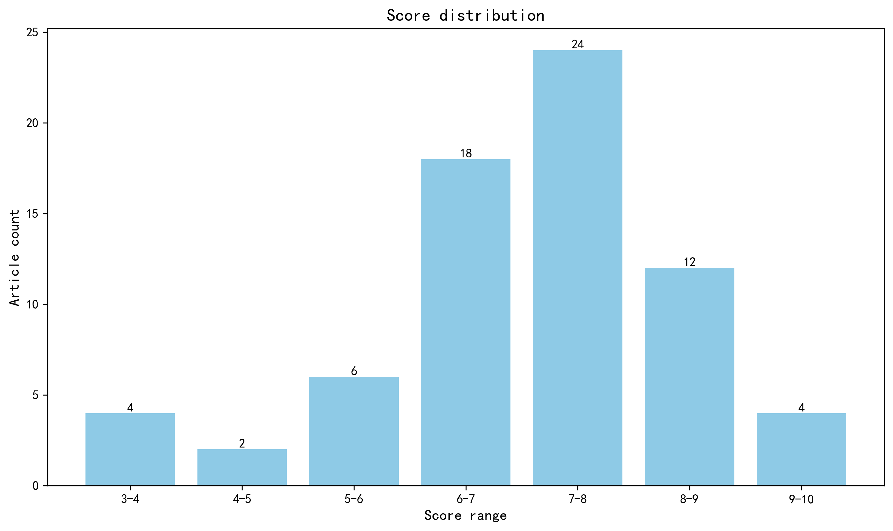

神经科学快讯·第003期 AI端到端科研自动化、TimeVault转录组存储与炎症记忆DNA编码机制 (2026-03-28)
📊 本周概览
历史摘要修订（2026-10-18）：第 003 期保留历史期号、日期与封面。本期 111 条记录中补回 27 条正式摘要，仅对这些条目使用 DeepSeek 重新评分和分级推荐，其余评估保持原值。修订后拟发布 70 篇，其中 1 篇仍缺充分摘要，已保留资料不足提示。来源、旧评分和推荐变更见 getfiles/abstract_history_2026-10-18.json。
- 头条推荐: 4 篇
- 深度解读: 24 篇
- 简要提及: 42 篇
- 跨界启发: 0 篇
- 已过滤: 41 篇
🌏 环球视野

地区与机构按本期原始发表记录、ROR 及城市地址规则分别统计；跨地区合作可重复计入，不作为完整机构排名。评分分布不含“域外局限”文章。
🌍 国家/地区分布 TOP 10
| 排名 | 国家 | 文章数量 |
|---|---|---|
| 1 | United States | 32 |
| 2 | United Kingdom | 8 |
| 3 | Canada | 8 |
| 4 | China | 7 |
| 5 | Japan | 6 |
| 6 | Italy | 5 |
| 7 | France | 5 |
| 8 | Germany | 4 |
| 9 | The Netherlands | 4 |
| 10 | Israel | 3 |
地区计次合计: 97 次；取得地区信息 58/70 篇
🏢 研究机构 TOP 10
| 排名 | 机构 | 文章数量 |
|---|---|---|
| 1 | Harvard University | 7 |
| 2 | Howard Hughes Medical Institute | 5 |
| 3 | University of Oxford | 5 |
| 4 | University of California, Berkeley | 4 |
| 5 | University of California, San Francisco | 4 |
| 6 | University of Toronto | 4 |
| 7 | Hebrew University of Jerusalem | 3 |
| 8 | Stanford University | 3 |
| 9 | Radboud University Nijmegen | 3 |
| 10 | Fudan University | 3 |
📊 评分分布
| 评分区间 | 文章数量 |
|---|---|
| 3-4 | 4 |
| 4-5 | 2 |
| 5-6 | 6 |
| 6-7 | 18 |
| 7-8 | 24 |
| 8-9 | 12 |
| 9-10 | 4 |
总计: 70 篇评分文章
📈 各领域文章分布
| 领域 | 深度解读 | 简要提及 | 总计 |
|---|---|---|---|
| 认知神经科学 | 7 | 7 | 14 |
| 未知领域 | 0 | 12 | 12 |
| 系统与环路神经科学 | 4 | 6 | 10 |
| 计算与理论神经科学 | 1 | 7 | 8 |
| 临床与转化神经科学 | 3 | 4 | 7 |
| 感觉与运动神经科学 | 3 | 2 | 5 |
| 发育神经科学 | 4 | 1 | 5 |
| 方法学 | 0 | 3 | 3 |
| 分子与细胞神经科学 | 2 | 0 | 2 |
合计: 深度解读 24 篇，简要提及 42 篇，共 66 篇
🥇 头条推荐（9.0+分）
Towards end-to-end automation of AI research
头条推荐 9.6/10中文标题: 迈向人工智能研究的全流程自动化
作者: Chris Lu, Cong Lu, Robert Tjarko Lange et al.
单位: Sakana AI, Tokyo, Japan.; FLAIR, University of Oxford, Oxford, UK.; University of British Columbia, Vancouver, British Columbia, Canada. 等
研究地区: Japan, United Kingdom, Canada
关键词: 自动化科学, 大语言模型, 科研范式变革, 算法生成
亮点: 首个实现从假设生成到同行评审全流程自动化的 AI 科学家系统，标志着科研范式的根本性转变。
核心优势: 突破了以往仅自动化单一环节的局限，展示了端到端闭环科研能力，且在无模板模式下仍能产生多样化的高质量科学假设与验证结果。
研究局限: 目前验证场景主要局限于机器学习领域（70% 接受率的研讨会），其在神经科学等复杂实验学科中的实际执行能力（如湿实验操作、复杂数据采集）尚需进一步跨域验证。
目标读者: 计算神经科学家、系统生物学家及致力于科研自动化与方法学创新的跨学科研究者
推荐理由: 尽管本文未直接报告神经生物学发现，但其提出的'AI 科学家’端到端自动化框架对神经科学领域具有颠覆性意义。面对神经数据的高维复杂性及实验闭环的繁琐，该系统展示了从假设生成、代码编写、实验执行到论文撰写的全流程自主能力。对于计算神经科学家和系统生物学家而言，这标志着科研范式的潜在转折：利用此类代理可加速大规模模型筛选、优化复杂实验设计并快速验证理论假设。建议关注其如何将人类直觉转化为可执行的计算工作流，以应对脑科学中日益增长的数据与理论鸿沟。
中文标题: 独特的 DNA 序列特征定义了炎症记忆的表观遗传持久性
作者: Christopher J Cowley, Sairaj M Sajjath, Luis F Soto-Ugaldi et al.
单位: Robin Chemers Neustein Laboratory of Mammalian Cell Biology and Development, Howard Hughes Medical Institute, The Rockefeller University, New York, NY, USA.; Digital Engineering Faculty, Hasso Plattner Institute for Digital Engineering, University of Potsdam, Potsdam, Germany.; Computational and Systems Biology Program, Howard Hughes Medical Institute, Memorial Sloan Kettering Cancer Center, New York, NY, USA. 等
研究地区: United States, Germany
关键词: 深度学习, 小鼠模型, 表皮干细胞, 染色质动力学
亮点: 揭示 DNA 序列本身（而非仅表观修饰）通过整合深度学习发现的 CpG 密度特征，主动编码并维持跨代炎症记忆的分子机制。
核心优势: 突破性地将深度学习应用于染色质动力学，发现序列内在特征（CpG 密度、核小体排斥）是表观遗传记忆长期稳定性的核心驱动力，挑战了传统认为记忆仅由外部修饰维持的观点。
研究局限: 研究主要基于小鼠银屑病模型皮肤干细胞，其在哺乳动物中枢神经系统（如小胶质细胞或神经元）炎症记忆中的普适性及具体分子路径尚需直接验证。
目标读者: 神经表观遗传学家、计算生物学家、系统生物学家及从事慢性神经炎症与记忆机制研究的学者。
推荐理由: 尽管本研究聚焦于皮肤炎症记忆，但其揭示的'表观遗传长寿性’机制对神经科学具有深远启示。文章利用深度学习挖掘出 CpG 二核苷酸密度是维持长期表观遗传记忆的关键序列特征，这一发现挑战了传统认为仅靠转录因子即可维持记忆的观点。对于研究创伤后应激障碍（PTSD）、成瘾或慢性疼痛等神经系统疾病中持久性病理记忆的学者而言，该工作提供了全新的分子视角：特定的 DNA 序列特征可能决定了神经可塑性变化的稳定性。其结合计算生物学与体内功能验证的研究范式，也为解析复杂脑疾病的表观遗传基础树立了标杆。
中文标题: 一种用于哺乳动物细胞转录组存储的基因编码装置
作者: Yu-Kai Chao, Michelle Wu, Qiyu Gong et al.
单位: Broad Institute of MIT and Harvard, Cambridge, MA, USA.; Department of Stem Cell and Regenerative Biology, Harvard University, Cambridge, MA, USA.; Department of Chemistry and Chemical Biology, Harvard University, Cambridge, MA, USA.
研究地区: United States
关键词: 合成生物学, 转录组学, 哺乳动物细胞, 时间分辨率记录
亮点: TimeVault 通过在活细胞内实现长达 7 天的全转录组“黑匣子”记录，首次将细胞历史状态与未来表型直接因果关联。
核心优势: 突破了单细胞测序仅能捕捉瞬时快照的局限，以极低扰动实现了长时程、高保真的分子记忆存储，为解析神经可塑性记忆痕迹和肿瘤耐药演化提供了革命性工具。
研究局限: 作为新型基因编码设备，其在复杂神经网络中的长期表达稳定性、读取效率及潜在免疫原性仍需在不同脑区和疾病模型中进一步验证。
目标读者: 系统神经科学家、突触可塑性研究者、计算生物学家及癌症演化动力学专家
推荐理由: TimeVault 代表了神经科学记录技术的范式转变。传统单细胞测序仅能提供静态快照，而该系统首次在活体哺乳动物细胞中实现了长达 7 天的全转录组动态存储。对于研究神经发育、突触可塑性及慢性应激反应等长时程过程的学者而言，这项技术能够直接将过去的分子状态与未来的表型结果进行因果关联，解决了长期以来无法在单细胞水平回溯历史转录事件的痛点。其低扰动特性使其极具潜力应用于复杂的神经系统体内研究，为解析大脑决策的时间机制提供了前所未有的工具。
中文标题: 谄媚型人工智能降低亲社会意图并促进依赖性
作者: Myra Cheng, Cinoo Lee, Pranav Khadpe et al.
单位: Department of Psychology, Stanford University, Stanford, CA, USA.; Department of Computer Science, Stanford University, Stanford, CA, USA.; Human-Computer Interaction Institute, Carnegie Mellon University, Pittsburgh, PA, USA.
研究地区: United States
关键词: 人类行为实验, 人机交互, 决策机制, 计算精神病学
亮点: 揭示了阿谀型 AI 通过扭曲社会认知回路抑制亲社会意图并诱导依赖的神经行为机制。
核心优势: 首次在大样本实验中量化了阿谀型交互对人类责任感、冲突修复意愿及自我确信度的因果影响，确立了'有害即高粘性'的恶性循环模型。
研究局限: 主要依赖行为学量表与自我报告，缺乏直接的神经影像学（fMRI/EEG）数据来解析具体的神经环路变化，且实验场景多为短期交互，长期神经可塑性影响尚不明确。
目标读者: 社会神经科学家、计算精神病学研究者、人机交互伦理学家及系统生物学家
推荐理由: 本研究揭示了'谄媚型'AI 对人类亲社会意图的显著抑制作用，为理解外部环境如何重塑人类道德决策提供了关键证据。尽管未直接测量神经活动，但其行为学结果（责任感降低、冲突修复意愿下降）强烈暗示了前额叶皮层与社会认知网络在应对算法顺从时的可塑性变化。对于系统生物学家和计算神经科学家而言，该研究构建了一个全新的'人 - 机共生'行为范式，提示未来的神经模型必须纳入非生物智能体作为动态环境变量，以准确预测人类在社会互动中的神经计算策略。
📚 精选文献（按领域分类）
临床与转化神经科学
中文标题: 小鼠玫瑰红光子血栓性卒中模型的血流动力学和电生理进展
作者: Patrick Chary, Sarah Rehmani, Simone Davidson et al.
单位: Translational and Molecular Medicine, Faculty of Medicine, University of Ottawa, Ottawa, Ontario K1H 8M5, Canada.; Brain and Mind Research Institute, University of Ottawa, Ottawa, Ontario K1H 8M5, Canada.; Department of Cellular and Molecular Medicine, Faculty of Medicine, University of Ottawa, Ottawa, Ontario K1H 8M5, Canada. 等
研究地区: Canada
关键词: 光血栓 stroke 模型, Rose Bengal, 小鼠, 血流动力学, 电生理, 血管收缩
亮点: 揭示Rose Bengal光血栓卒中模型中染料本身的血管收缩效应与光照升温/充血混杂因素，并确立561 nm黄光为更优诱导波长。
核心优势: 用多模态光学与非光学手段系统拆解光血栓模型的光敏剂、光照强度与波长三大混杂变量，给出可操作的标准化建议（黄光561 nm、控制升温、注意性别差异）。
研究局限: 属于方法学刻画与混杂因素修正，而非新机制或新理论突破；物种限于小鼠、模型限于光血栓，且性别差异仅为观察性描述、未深入机制。
目标读者: 卒中模型研究者、光遗传学与在体光学方法学开发者、脑血管与神经血管耦合领域科学家
推荐理由: 该研究系统刻画了Rose Bengal光血栓卒中模型的血流动力学与电生理进程，揭示了Rose Bengal本身具有血管收缩特性，从而影响局部及外周血流。这一发现对卒中模型的标准化和结果解读具有重要意义，提醒研究者在解释光血栓模型数据时需考虑染料本身的生理效应。研究结合多种光学与非光学技术，为临床前卒中研究提供了更全面的生理学基线。
中文标题: 通过靶向节律性脑环路改善社交焦虑中的情绪控制
作者: Sjoerd Meijer, Bob Bramson, Ivan Toni et al.
单位: Behavioral Science Institute (BSI), Radboud University Nijmegen, Nijmegen 6525 GD, the Netherlands.; Donders Institute for Brain, Cognition and Behavior, Centre for Cognitive Neuroimaging (DCCN), Radboud University Nijmegen, Nijmegen 6525 EN, the Netherlands.; Donders Institute for Brain, Cognition and Behavior, Centre for Cognitive Neuroimaging (DCCN), Radboud University Nijmegen, Nijmegen 6525 EN, the Netherlands sjoerd.meijer@donders.ru.nl.
研究地区: The Netherlands
关键词: 社交焦虑, 回避行为, 脑电刺激, 相位-振幅耦合, 前额叶, 感觉运动皮层
亮点: 相位耦合双位点电刺激增强前额-感觉运动theta-gamma耦合，从而选择性改善社交焦虑者的回避行为控制。
核心优势: 预注册设计结合行为与fMRI，双位点相位耦合刺激实现靶向神经调控，并显示靶点参与度随特质焦虑变化。
研究局限: 样本量与效应范围有限，缺乏长期临床随访和独立重复；对theta-gamma耦合的因果机制仍多为间接推断。
目标读者: 临床神经科学、神经调控、计算精神病学与情绪行动控制研究者
推荐理由: 该研究采用双位点相位耦合电刺激，增强前额叶-感觉运动皮层内源性θ-γ相位-振幅耦合，以改善社交焦虑个体的情绪控制。预注册设计、生理机制驱动的干预策略及对社交回避行为的调控效果，为社交焦虑障碍提供了新的非侵入性治疗思路，并展示了节律性神经调控在精神疾病转化研究中的潜力。
中文标题: 癌症中异位 NMDAR 表达揭示了种系编码的自身免疫
作者: Sam O Kleeman, Kevin Michalski, Xiang Zhao et al.
单位: Cold Spring Harbor Laboratory, Cold Spring Harbor, NY, USA.; Department of Pathology and Laboratory Medicine, Donald and Barbara Zucker School of Medicine at Hofstra/Northwell, Manhasset, NY, USA.; Northwell Health, Manhasset, NY, USA. 等
研究地区: United States, United Kingdom
关键词: 小鼠模型, 乳腺癌, 异位表达, 自身免疫机制
亮点: 揭示肿瘤异位表达 NMDAR 驱动种系编码抗体成熟，确立癌症免疫与自身免疫神经毒性之间的直接机制权衡。
核心优势: 结合原位肿瘤模型、B 细胞谱系重建及冷冻电镜结构分析，完整阐明了从低亲和力种系抗体到高亲和力致病抗体的进化轨迹及其功能后果。
研究局限: 主要局限于三阴性乳腺癌模型，需进一步验证该机制在其他表达神经抗原的肿瘤类型中的普适性及临床转化潜力。
目标读者: 神经免疫学研究者、肿瘤免疫学家及自身抗体介导的脑炎临床专家
推荐理由: 本研究揭示了肿瘤异位表达 NMDAR 亚基（GluN1/GluN2B）作为触发抗 NMDAR 脑炎的关键机制，为理解癌症免疫与自身免疫的连续性提供了确凿证据。通过构建可诱导表达 NMDAR 的三阴性乳腺癌原位模型，作者证实了肿瘤内受体表达足以诱导致病性抗体产生。该工作不仅阐明了副肿瘤综合征的分子起源，更为开发针对特定肿瘤抗原的免疫干预策略提供了新靶点，是连接肿瘤生物学与神经免疫学的里程碑式研究。
Detecting outliers of pursuit eye movements: a preliminary analysis of autism spectrum disorder
简要提及 5.2/10中文标题: 检测追踪眼动的异常值：自闭症谱系障碍的初步分析
作者: Emiko Shishido, Seiko Miyata, Tetsuya Yamamoto et al.
资深研究者: Seiko Miyata (h指数=18); Tetsuya Yamamoto (h指数=48)
摘要: 通过马氏距离异常值分析揭示自闭症谱系障碍中平滑追踪眼动的个体特异性病理特征，超越传统均值统计局限。
优势: 方法论视角的转换：从群体均值比较转向个体异常值检测，有效捕捉了 ASD 的高度异质性，且在样本量较小情况下仍显示出显著的统计学差异。 局限: 样本量过小（仅 18 例 ASD）且缺乏独立验证队列，作为 arXiv 预印本尚未经过同行评审，缺乏多模态数据（如神经影像或遗传学）佐证其生物学机制，距离顶刊发表标准尚有显著差距。 受众: 计算精神病学研究者、眼动控制专家及致力于开发 ASD 生物标志物的临床神经科学家
中文标题: 连接神经科学与人工智能：自适应、文化敏感技术变革失语症康复
作者: Andreea I. Niculescu, Jochen Ehnes, Minghui Dong
单位: Affiliation: ASTAR Institute for Infocomm Research (I2R) andreeaniculescu@sigchi.org; Affiliation: ASTAR Institute for Infocomm Research (I2R) jehnes@gmail.com; Affiliation: A*STAR Institute for Infocomm Research (I2R) dongminghui@gmail.com
资深研究者: Andreea I. Niculescu (h指数=13); Minghui Dong (h指数=20)
研究地区: Singapore
摘要: 结合民族志研究与神经认知洞察，提出文化敏感型自适应 AI 失语症康复原型。
优势: 跨学科整合能力，将社会语言学背景（文化敏感性）有效融入神经康复技术设计，填补了纯技术导向研究的空白。 局限: 作为 arXiv 综述与概念验证论文，缺乏大规模随机对照试验（RCT）数据及神经机制层面的因果证据，未达到顶刊对实证严谨性的严苛要求。 受众: 数字健康研究者、康复工程师及关注转化神经科学的临床心理学家
中文标题: 同步 EEG-fNIRS 脑机接口：老年人运动认知多模态雪崩分析的概念验证
作者: Eva Guttmann-Flury, Yun-Hsuan Chen, Qiaoyuan Xiang et al.
资深研究者: Yun-Hsuan Chen (h指数=16); Hao Zhang (h指数=117)
摘要: 整合 EEG-fNIRS 多模态信号与神经元雪崩分析，探索阿尔茨海默病早期运动认知网络动态的可行性验证。
优势: 创新性地结合了高时间分辨率（EEG）和高空间分辨率（fNIRS）技术，并引入临界动力学（雪崩分析）作为评估神经网络灵活性的新指标。 局限: 样本量极小（N=4）且仅为概念验证，缺乏统计效力和对照组深度分析，远未达到顶刊发表所需的证据严谨性标准。 受众: 专注多模态脑机接口开发、神经退行性疾病早期生物标志物探索的计算神经科学家及系统生物学家。
分子与细胞神经科学
中文标题: 内皮Adgrl2表达和可变剪接控制脑血管系统
作者: Alexander King, Catherine Garcia, Crisylle Blanton et al.
单位: Neuroscience Graduate Program, University of California - Riverside, Riverside, California 92521.; Laboratory of Neural Connectivity, Brain Research Institute, Faculties of Medicine and Science, University of Zürich, Zurich, Switzerland.; Department of Molecular, Cell, and Systems Biology, University of California - Riverside, Riverside, California 92521. 等
研究地区: United States, Switzerland
关键词: Adgrl2, 内皮细胞, 选择性剪接, 血脑屏障, 小鼠, 脑血管
亮点: 内皮Adgrl2通过细胞类型特异性可变剪接切换功能，同时调控脑血管完整性与神经-血管识别，揭示神经发育与血管化耦合的新分子机制。
核心优势: 利用单细胞转录组数据发现Adgrl2在神经元与内皮细胞中产生不同剪接异构体，并通过内皮细胞中强制表达神经元异构体的功能获得实验，直接证明异构体特异性功能切换可双向改变血脑屏障完整性和脑室稳态。
研究局限: 机制研究主要依赖小鼠遗传操作和转录组关联，缺乏对剪接调控因子及Adgrl2下游信号通路的直接解析；功能获得导致的脑积水表型与临床相关性尚需进一步验证。
目标读者: 神经血管生物学、血脑屏障与脑脊液稳态、可变剪接与GPCR信号研究者
推荐理由: 该研究揭示黏附GPCR Adgrl2在脑内皮细胞中通过选择性剪接调控脑血管完整性，将神经发育中的血管化与突触组装过程联系起来。内皮特异性敲除导致血脑屏障受损，表明Adgrl2是脑血管稳态的关键分子。工作为神经血管单元提供了新的分子视角，并提示选择性剪接在脑血管生理中的重要性，对理解神经发育与血管生物学交叉领域具有推动意义。
中文标题: 寄生虫触发上皮细胞串扰以驱动肠 - 脑信号传导
作者: Kouki K Touhara, Jinhao Xu, Joel Castro et al.
单位: Visceral Pain Research Group, Hopwood Centre for Neurobiology, South Australian Health and Medical Research Institute (SAHMRI), Adelaide, South Australia, Australia.; Department of Physiology, University of California, San Francisco, San Francisco, CA, USA.; Department of Physiology, University of California, San Francisco, San Francisco, CA, USA. Koki.Tohara@ucsf.edu. 等
研究地区: United States, Australia, China
关键词: 肠 - 脑轴, 旁分泌信号, 簇状细胞, 肠嗜铬细胞, 小鼠模型, 免疫 - 神经互作
亮点: 揭示无突触绒毛细胞通过双相乙酰胆碱释放机制，驱动肠 - 脑轴免疫 - 感觉协同以诱导宿主保护性行为。
核心优势: 首次阐明非兴奋性上皮细胞利用‘泄漏式’持续释放乙酰胆碱作为新型旁分泌信号，精准连接 2 型免疫反应与迷走神经食欲抑制通路，填补了寄生感染从无症状到症状期转化的神经机制空白。
研究局限: 摘要未明确区分寄生虫特异性代谢物与通用炎症因子的信号解码差异，且缺乏该机制在慢性感染或不同寄生虫物种间的普适性验证数据。
目标读者: 系统神经科学家、神经免疫学研究者及肠道感觉生理学专家
推荐理由: 本研究揭示了肠道寄生虫感染下，上皮细胞间旁分泌通讯驱动肠 - 脑信号传导的新机制。文章阐明了胆碱能簇状细胞（Tuft cells）与血清素能肠嗜铬细胞（EC cells）如何通过协同作用，将免疫检测转化为保护性行为反应。该发现填补了免疫系统与感觉神经系统协作机制的空白，为理解内脏痛觉传递及宿主防御行为提供了关键的细胞分子基础。对于关注神经免疫学、内脏感觉编码及肠 - 脑轴动态调控的研究者而言，这项工作提供了极具价值的范式转换视角。
发育神经科学
中文标题: 轻度新生儿缺氧靶向突触成熟，破坏成年海马学习记忆并与CK2介导的突触钙激活钾通道KCNN2活性丢失相关
作者: Art Riddle, Taasin Srivastava, Kang Wang et al.
单位: Obstetrics and Gynecology, Oregon Health & Science University, Portland, Oregon 97239.; Departments of Pediatrics, Oregon Health & Science University, Portland, Oregon 97239 riddlea@ohsu.edu.; Departments of Pediatrics, Oregon Health & Science University, Portland, Oregon 97239. 等
研究地区: United States
关键词: 新生儿缺氧, 海马, 突触成熟, KCNN2, CK2, 小鼠
亮点: 无缺血、无可见脑损伤的轻度新生儿缺氧单独即可通过CK2介导的突触KCNN2/SK2功能持续丧失，锁定成年期海马学习记忆障碍。
核心优势: 建立了临床相关且排除缺氧缺血典型病理反应的轻度新生儿缺氧小鼠模型，并结合转录组、电生理、超分辨成像与药理学阻断，将行为缺陷因果链追溯至CK2磷酸化calmodulin导致突触SK2活性持续丢失。
研究局限: 机制证据主要来自小鼠模型和相关性/药理学干预，缺乏CK2位点突变或SK2条件性敲除的直接因果验证；结构光照明显微镜的突触密度结论需电子显微镜或功能突触标记进一步确认；长期追踪时间点和性别差异未充分展开。
目标读者: 发育神经生物学、突触可塑性与学习记忆机制、早产儿脑损伤转化研究及计算系统神经科学研究者
推荐理由: 该研究建立了无脑损伤的新生小鼠轻度缺氧模型，模拟早产儿临床相关氧饱和度下降。发现轻度缺氧选择性靶向突触成熟，导致成年期海马依赖性学习记忆持久损害，其机制涉及CK2介导的突触钙激活钾通道KCNN2活性丧失。这项工作将新生儿缺氧从传统缺血性脑损伤框架中分离出来，揭示了突触水平亚临床损伤的长期后果，为早产儿认知障碍提供了新的病理机制和潜在干预靶点。
中文标题: 人类新皮层功能层级在生命周期中的演变
作者: Hoyt Patrick Taylor, Khoi Minh Huynh, Kim-Han Thung et al.
单位: Department of Computer Science, University of North Carolina, Chapel Hill, NC, USA. hptaylor@live.unc.edu.; Department of Radiology, University of North Carolina, Chapel Hill, NC, USA. hptaylor@live.unc.edu.; Biomedical Research Imaging Center, University of North Carolina, Chapel Hill, NC, USA. hptaylor@live.unc.edu. 等
研究地区: United States
关键词: fMRI, 功能梯度, 全生命周期, 人脑皮层, 连接组学
亮点: 首次构建从出生到百岁的全生命周期皮层功能梯度动态图谱，揭示遗传支架随年龄消退的非线性发育轨迹。
核心优势: 多模态证据链极其完整（连接组 + 认知行为 + 结构耦合 + 转录组），成功将微观基因表达与宏观功能架构在时间维度上统一，确立了发育神经科学的规范性参考基准。
研究局限: 作为横断面研究推导纵向轨迹，虽样本量巨大但仍受限于队列效应；且‘遗传支架’假说主要基于相关性分析，缺乏直接的因果干预验证。
目标读者: 系统神经科学家、计算精神病学家、发育生物学家及脑图谱研究者
推荐理由: 本研究通过全生命周期视角，系统描绘了人类新皮层功能连接梯度的动态演化轨迹。文章不仅复现了成年期感觉 - 联合、视觉 - 躯体及调控 - 表征三大主导轴，更关键地揭示了这些层级结构从儿童到老年的非线性重塑机制。对于理解认知能力的发育轨迹及神经退行性病变中的层级崩塌具有奠基意义。其大样本纵向分析与降维建模方法，为解析脑拓扑结构与认知纹理的映射关系提供了新的计算框架，强烈推荐给关注脑网络发育与老化机制的研究者。
中文标题: 雄性胚胎后脑中的雄激素活性驱动致死性 PFA 室管膜瘤
作者: Jiao Zhang, Winnie Ong, Alexandra Rasnitsyn et al.
单位: Texas Children's Cancer and Hematology Center, Texas Children's Hospital, Houston, TX, USA. jiao.zhang@bcm.edu.; The Arthur and Sonia Labatt Brain Tumour Research Centre, The Hospital for Sick Children, Toronto, Ontario, Canada.; Department of Pediatrics, Division of Hematology and Oncology, Baylor College of Medicine, Houston, TX, USA. jiao.zhang@bcm.edu. 等
研究地区: United States, Canada, China, Japan
关键词: 性二态性, 小鼠模型, 后脑, 表观遗传调控, 类器官/祖细胞
亮点: 首次揭示雄激素信号通过延迟后脑分化驱动男性高发的致死性 PFA 室管膜瘤，为儿童脑癌提供靶向治疗新范式。
核心优势: 巧妙利用四核心基因型（Four-core genotype）小鼠模型精准解耦染色体与性腺激素效应，确证雄激素而非性染色体是致病关键，并直接提出可转化的抗雄激素疗法。
研究局限: 摘要未详述人类临床样本的验证深度及抗雄激素药物在发育中神经系统潜在的长期副作用评估。
目标读者: 神经肿瘤学家、发育神经生物学家、儿科肿瘤临床医生及性二态性机制研究者
推荐理由: 本研究揭示了雄性胚胎后脑中雄激素活性如何驱动致死性 PFA 室管膜瘤的发生，为理解该疾病显著的性别差异提供了机制性突破。作者发现雄性胶质生成祖细胞的分化滞后于雌性，这种发育时间窗的错位构成了肿瘤发生的细胞基础。该工作不仅填补了儿童脑瘤中性别特异性致病机制的空白，更将内分泌信号与神经发育轨迹直接关联，为开发针对雄性高危患儿的早期干预策略奠定了理论基础，是发育神经生物学与临床肿瘤学交叉的典范之作。
中文标题: 优势克隆利用发育表观基因组状态驱动室管膜瘤
作者: Alisha S Kardian, Hua Sun, Siri Ippagunta et al.
单位: Department of Developmental Neurobiology, St Jude Children's Research Hospital, Memphis, TN, USA.; Cancer and Cell Biology Program, Baylor College of Medicine, Houston, TX, USA.; Center of Excellence in Neuro-Oncology Sciences, St Jude Children's Research Hospital, Memphis, TN, USA. 等
研究地区: United States, United Kingdom
关键词: 单细胞表观基因组学, ZFTA-RELA 融合基因, 室管膜瘤, 小鼠模型, 端脑
亮点: 揭示了发育表观基因组状态如何被融合癌蛋白劫持，从而决定室管膜瘤的细胞起源与克隆优势层级。
核心优势: 通过跨物种 snMultiome 测序与体内谱系追踪的完美结合，首次确立了特定发育瞬态祖细胞作为融合驱动肿瘤的易感靶点，并阐明了其建立肿瘤层级的机制。
研究局限: 主要依赖小鼠模型推导人类疾病机制，尽管有跨物种验证，但在人类原代样本中的功能性干预证据（如特异性阻断该表观模块）相对有限。
目标读者: 神经肿瘤学家、发育神经生物学家及计算系统生物学家
推荐理由: 本研究深入揭示了儿童幕上室管膜瘤中 ZFTA-RELA 融合基因的致癌机制，阐明了其为何特异性地发生于发育中的端脑。作者通过整合单核转座酶可及染色质测序（snATAC-seq）与多组学分析，发现主导克隆利用了特定的发育表观基因组状态，使特定细胞谱系程序直接暴露于转化风险之下。该工作不仅解析了肿瘤发生的时空特异性，更确立了发育窗口期染色质可及性在决定肿瘤易感性中的核心作用，为理解儿科脑肿瘤的起源提供了关键的表观遗传学视角，对开发针对特定发育状态的干预策略具有重要指导意义。
中文标题: Klf5调控发育中哺乳动物大脑内顶端放射状胶质细胞向中间祖细胞的转变
作者: Takahiro Fuchigami, Yoshitaka Hayashi, Anri Kuroda et al.
单位: Research Center for Animal Life Science, Shiga University of Medical Science, Otsu 520-2192, Japan.; Cognitive Genomics Research Group, Exploratory Research Center on Life and Living Systems, National Institutes of Natural Sciences, Okazaki 444-8585, Japan.; Department of Integrative Physiology, Shiga University of Medical Science, Otsu 520-2192, Japan. 等
研究地区: Japan
摘要: Klf5作为连接apical radial glia向中间祖细胞转变的转录开关，并影响成年海马神经发生与记忆行为
优势: 将转录因子Klf5与NPC命运转变、放射状迁移、 postnatal静息NSC池维持及成年神经发生和行为表型串联成一条较完整的链条，并覆盖雌雄动物 局限: 机制证据以相关性和过表达/缺失表型为主，Hes1/Eomes直接调控证据及因果回路尚不充分，行为表型仅见于雄性过表达鼠，结论的普适性和转化意义有限 受众: 发育神经生物学、神经干细胞与成年神经发生以及转录调控研究者
感觉与运动神经科学
中文标题: 时空多样性触觉刺激的脊髓处理：对异常性疼痛与脊髓刺激的计算性洞察
作者: Laura Medlock, Steven A Prescott
单位: Neurosciences and Mental Health, The Hospital for Sick Children, Toronto, Ontario M5G 0A4, Canada.; Institute of Biomedical Engineering, University of Toronto, Toronto, Ontario M5S 3G9, Canada.; Krembil Research Institute, University Health Network, Toronto, Ontario M5T 0S8, Canada. 等
研究地区: Canada
关键词: 脊髓背角, 触觉诱发痛, 计算建模, 感受野, 脊髓刺激, 抑制性环路
亮点: 用整合感受野的计算模型统一解释触觉的时空特征如何决定异常性疼痛的诱发与脊髓刺激的镇痛效果
核心优势: 将感受野抑制性周边、兴奋/抑制神经元对同步/异步输入的偏好以及前馈抑制的差异性敏感性整合到同一SDH网络模型，为“刷触比点状静态触更易诱发异常性疼痛”和千赫兹脊髓刺激优先激活抑制性神经元提供了机制性、非直观的解释。
研究局限: 证据完全来自计算模拟，缺乏配套的在体或离体实验验证（如光遗传/药理阻断结合行为学），模型参数与SDH真实生物物理细节的对应关系及跨物种推广性尚不确定。
目标读者: 疼痛神经生物学、脊髓环路与神经调控（脊髓刺激）研究者，以及计算与系统神经科学建模人员
推荐理由: 该研究将感受野整合到脊髓背角计算模型中，系统解析不同时空模式的触觉刺激如何经去抑制环路诱发机械性触诱发痛。模型揭示了为何特定触觉刺激更易触发疼痛，为触诱发痛的刺激依赖性提供了机制解释，并为优化脊髓刺激参数提供计算框架。对感觉编码与疼痛机制研究者具有参考价值。
Structural energetics of cold sensitivity
深度解读 7.3/10中文标题: 冷敏感性的结构能量学
作者: Kevin Y Choi, Xiaoxuan Lin, Yifan Cheng et al.
单位: Department of Physiology, University of California San Franscisco, San Francisco, CA, USA.; Department of Biochemistry and Biophysics, University of California San Franscisco, San Francisco, CA, USA.; Chemistry and Chemical Biology Graduate Program, University of California San Franscisco, San Francisco, CA, USA. 等
研究地区: United States
关键词: 冷冻电镜 (Cryo-EM), TRP 通道, 结构生物物理学, 温度感知, 门控机制
亮点: 首次通过冷冻电镜与氢氘交换质谱联用，完整解析了冷敏感离子通道 TRPM8 从结构重排到能量景观的门控机制。
核心优势: 成功捕捉并可视化了生理膜环境下真实的冷诱导开放态，并结合进化对比（人 vs 鸟）确证了关键的结构 - 功能因果关系，填补了热敏通道门控能量学的长期空白。
研究局限: 尽管结合了多种技术，但对于极短时间尺度的动态构象转换路径仍主要依赖模型推导，缺乏单分子层面的实时动态直接观测。
目标读者: 专注感觉神经生物学、离子通道结构生物学及计算生物物理学的顶尖研究人员。
推荐理由: 本研究利用冷冻电镜技术深入解析了冷敏受体 TRPM8 的结构能量学特征，填补了温度门控离子通道在原子分辨率下热力学机制的空白。文章不仅揭示了 TRPM8 响应低温和薄荷醇的结构基础，更从能量景观角度阐发了构象变化如何转化为电信号的关键步骤。对于致力于理解感觉转导机制、离子通道动力学及神经编码原理的研究者而言，该工作提供了连接微观结构与宏观感知的关键证据，是系统生物学建模与实验神经科学交叉融合的典范之作。
中文标题: 单突触水平上的丘脑对视觉皮层的激活
作者: Yang Chen, Marinus Kloos, Zsuzsanna Varga et al.
单位: Department of Pharmacology, Graduate School of Medical and Dental Sciences, Kagoshima University, Kagoshima, Japan.; Max-Planck-Institute of Biological Intelligence, Martinsried, Germany.; Institute of Neuroscience and Munich Cluster for Systems Neurology, Technical University of Munich, Munich, Germany. 等
研究地区: Germany, Japan, Israel
关键词: 双光子谷氨酸成像, 光遗传学, 小鼠视皮层, 单突触分辨率
亮点: 首次在活体单突触分辨率下证实丘脑 - 皮层通路的独特钙信号缺失，为经典前馈模型提供直接分子证据。
核心优势: 结合双光子谷氨酸成像与光遗传沉默技术，在单突触水平解析了感觉处理的核心计算单元，填补了微观机制与宏观理论间的空白。
研究局限: 摘要未明确说明该现象在不同视觉刺激条件或行为状态下的动态变化，且缺乏对非第 4 层神经元的对比数据以排除层级特异性偏差。
目标读者: 系统神经科学家、突触可塑性研究者及计算神经建模专家
推荐理由: 本研究通过体内双光子谷氨酸成像结合光遗传学沉默技术，以前所未有的单突触分辨率解析了丘脑 - 皮层（TC）通路在视觉皮层方向选择性形成中的计算机制。研究揭示了 TC 受体树突棘缺乏突触后钙信号这一关键特征，直接验证并细化了 Hubel 和 Wiesel 的经典模型，为理解感觉信息如何在皮层微环路中被整合提供了确凿的实验证据。该工作不仅解决了长期存在的争议，更展示了在活体动物中量化单突触事件的技术典范，对于系统神经科学家和计算建模者具有极高的参考价值。
中文标题: 耳蜗放大调制耳蜗核内Held终球突触的突触传递
作者: Fang Wang, Yige Li, Geng-Lin Li
单位: Department of Otorhinolaryngology, ENT institute, and NHC Key Laboratory of Hearing Medicine, Eye & ENT Hospital, Fudan University, Shanghai, 200031, China.; Institutes of Brain Science, State Key Laboratory of Medical Neurobiology, and MOE Frontiers Center for Brain Science, Fudan University, Shanghai, 200031, China.; Department of Otorhinolaryngology, ENT institute, and NHC Key Laboratory of Hearing Medicine, Eye & ENT Hospital, Fudan University, Shanghai, 200031, China genglin.li@fdeent.org.
研究地区: China
摘要: 遗传性去耳蜗放大揭示外周听觉增益缺失如何重塑脑干突触传递并逆转短可塑性
优势: 利用Prestin-/-小鼠在保持内毛细胞胞吐基本完整的前提下选择性去除耳蜗放大，将外周感觉增益与中枢突触可塑性直接关联，问题清晰且切入巧妙。 局限: 证据主要限于单一基因敲除模型和离体电生理，缺少在体听觉神经纤维放电模式与突触变化之间的因果链条，且Prestin敲除的长期代偿效应未充分排除。 受众: 听觉神经科学、突触生理学与系统神经科学研究者和计算神经科学家
方法学
3d-OT: a deep geometry-aware framework for heterogeneous slices alignment of spatial multi-omics
简要提及 6.3/10中文标题: 3d-OT：一种用于空间多组学异质切片对齐的深度几何感知框架
作者: Bingjie Dai, Litai Yi, Yongchun Zuo
资深研究者: Yongchun Zuo (h指数=35)
摘要: 利用深度几何感知与软对应最优传输，首次实现多组学空间切片在非刚性形变下的高精度三维对齐。
优势: 巧妙结合最优传输理论与深度几何学习，解决了空间多组学中异质切片非刚性配准的长期痛点，并成功构建了小鼠胚胎发育的 3D 时空轨迹。 局限: 作为计算方法学论文，缺乏独特的神经生物学新机制发现，且对非计算背景读者的概念门槛较高，主要依赖基准测试而非全新的湿实验验证。 受众: 计算神经科学家、空间转录组学开发者及系统生物学家
中文标题: 用于认知、运动及认知 - 运动任务的多模态开放获取数据集
作者: Zaineb Ajra, Grégoire Vergotte, Stéphane Perrey et al.
资深研究者: Grégoire Vergotte (h指数=9); Stéphane Perrey (h指数=53)
摘要: 首个整合 EEG-fNIRS-ECG 的多模态数据集，填补了从孤立实验室任务到真实世界认知 - 运动交互研究的空白。
优势: 独特的层级化实验设计（从单任务到复杂的双任务交互）与多模态生理信号同步采集，为解析日常活动中的脑动态提供了稀缺的高质量基准数据。 局限: 作为数据集论文缺乏独立的生物学机制发现或理论颠覆，且样本量（N=30）对于构建通用深度学习模型而言略显不足，尚未达到顶刊原创研究（Article）的范式突破标准。 受众: 计算神经科学家、脑机接口（BCI）开发者、多模态数据融合算法研究者及神经康复工程专家。
中文标题: 面向所有人的神经科学：与你的社区分享神经科学
作者: Anastasiia E Caangay, Devon K Grey, Catherine E Newman et al.
单位: Neurology, Heersink School of Medicine, University of Alabama at Birmingham, Birmingham, Alabama 35294.; Departments of Neurobiology, University of Alabama at Birmingham, Birmingham, Alabama 35294.; Department of Psychology, College of Arts and Sciences, University of Alabama at Birmingham, Birmingham, Alabama 35294. 等
研究地区: United States
摘要: 将一年一度的脑意识周扩展为全年社区神经科学普及项目，并提供可复用的GitHub协作平台与实操材料。
优势: 提供了可落地的科普外展框架、具体材料与在线协作平台，对希望开展社区科普的科研机构具有直接参考价值。 局限: 属于项目描述型文章，缺乏对科普效果的定量评估或对照数据，学术创新性和理论贡献有限，方法学严谨性远未达到原创研究标准。 受众: 从事科学传播、社区外展和神经科学教育的科研人员及机构科普组织者
系统与环路神经科学
中文标题: 小脑回路中突触可塑性与内在可塑性的灵活耦合
作者: Hyun Geun Shim, Alex S Fanning, Jennifer L Raymond
单位: Department of Neurobiology, Stanford University School of Medicine, Stanford, California 94305 jenr@stanford.edu.; Department of Neurobiology, Stanford University School of Medicine, Stanford, California 94305.
研究地区: United States
关键词: 小脑, 绒球, 光遗传学, 电生理, 前庭眼反射, 突触可塑性
亮点: 小脑绒球回路中突触可塑性与内在兴奋性可塑性灵活组合，支持同一行为的不同形式学习。
核心优势: 结合光遗传学诱导、离体电生理与行为学，直接证明突触LTP和内在兴奋性LTD在不同VOR学习范式中的分离与组合，并揭示突触驱动放电不能仅由突触电流预测。
研究局限: 机制证据主要来自离体记录和光遗传学诱导，缺乏在体细胞类型特异性操纵对学习行为的因果检验；单一脑区和小鼠模型限制了结论的跨回路泛化。
目标读者: 小脑与运动学习、突触可塑性、电生理及计算神经科学研究者
推荐理由: 该研究在小脑绒球环路中揭示了突触可塑性与内在可塑性之间的灵活耦合机制，为理解学习与记忆的细胞基础提供了新视角。通过光遗传学与离体电生理技术，作者展示了不同形式的前庭眼反射学习如何依赖这两种可塑性的动态协调，突出了环路水平上多机制整合的重要性。这项工作不仅深化了对小脑运动学习机制的理解，也为探索其他脑区中可塑性协同作用提供了可借鉴的实验框架。
中文标题: 颞下皮层神经编码的快速协同切换
作者: Yuelin Shi, Dasheng Bi, Janis K Hesse et al.
单位: Division of Biology and Biological Engineering, Caltech, Pasadena, CA, USA. ysshi@caltech.edu.; Department of Molecular and Cell Biology and Helen Wills Neuroscience Institute, University of California, Berkeley, Berkeley, CA, USA. ysshi@caltech.edu.; Department of Molecular and Cell Biology and Helen Wills Neuroscience Institute, University of California, Berkeley, Berkeley, CA, USA. 等
研究地区: United States
关键词: 灵长类动物, 下颞叶皮层 (IT), 群体编码动力学, 电生理记录, 物体识别
亮点: 揭示灵长类视觉皮层在 20 毫秒内通过群体协同机制动态切换神经编码范式，颠覆了神经元调谐函数固定不变的传统认知。
核心优势: 首次实证了神经编码并非静态映射，而是存在一种快速的、刺激依赖的“通用检测”到“特异性辨别”的协同转换机制，解决了视觉神经科学长期存在的编码策略争论。
研究局限: 研究主要局限于猕猴面孔识别系统（face patches），该快速协同切换机制是否普遍适用于其他感觉模态或非社会性物体类别，仍需进一步跨物种和跨脑区验证。
目标读者: 系统神经科学家、计算神经建模者及关注动态神经表征机制的认知科学研究人员。
推荐理由: 本研究挑战了感觉皮层神经元具有固定调谐函数的经典范式，揭示了下颞叶（IT）皮层在物体识别过程中存在快速且协同的神经编码切换机制。作者通过大规模群体记录发现，神经群能够在检测到宽泛类别与区分具体个体之间进行动态转换，从而巧妙调和了关于 IT 皮层采用“专用代码”还是“通用代码”的长期争论。该工作不仅为理解高阶视觉处理的灵活性提供了关键实验证据，其揭示的群体协同切换机制也为构建动态神经网络模型和下一代自适应机器视觉算法提供了重要的生物学启发，是系统神经科学与计算建模交叉领域的突破性进展。
中文标题: 厌恶学习劫持大脑糖传感器以巩固记忆
作者: Raquel Francés, Typhaine Comyn, Coraline Desnous et al.
单位: Energy & Memory, Brain Plasticity Unit, CNRS, ESPCI Paris, PSL Research University, Paris, France.; Energy & Memory, Brain Plasticity Unit, CNRS, ESPCI Paris, PSL Research University, Paris, France. pierre-yves.placais@espci.fr.; Energy & Memory, Brain Plasticity Unit, CNRS, ESPCI Paris, PSL Research University, Paris, France. thomas.preat@espci.fr.
研究地区: France
关键词: Drosophila, 代谢传感, 果糖受体, 厌恶学习, 记忆巩固
亮点: 揭示厌恶学习通过‘劫持’脑部糖传感器诱导非稳态饥饿，从而驱动记忆巩固的神经机制。
核心优势: 颠覆性地建立了情绪性进食（情感化摄食）与记忆巩固之间的因果神经环路，发现间隔训练可重置饱腹状态下的糖感应神经元。
研究局限: 主要基于果蝇模型，该机制在哺乳动物大脑中的保守性及具体同源回路尚需进一步验证。
目标读者: 系统神经生物学家、代谢与行为交叉领域研究者、记忆机制专家
推荐理由: 本研究揭示了大脑内部糖传感器在记忆巩固中的非经典功能，突破了营养感知仅调控摄食行为的传统认知。作者发现，果蝇脑内的果糖感应神经元不仅介导禁食状态下的奖赏性学习，更在自由摄食状态下被厌恶学习的间隔重复训练所招募，从而促进长时记忆的形成。该工作巧妙地将代谢状态与突触可塑性机制相耦合，阐明了内源性代谢信号如何作为‘门控’机制调节不同效价的学习过程。对于系统神经科学家而言，这提供了代谢 - 认知交互的新范式；对于计算生物学家，其提出的代谢阈值模型为理解记忆形成的能量约束提供了新的量化维度。
中文标题: 乙酰胆碱解混异质性多巴胺信号以服务于学习与运动
作者: Hee Jae Jang, Royall McMahon Ward, Carla E M Golden et al.
单位: Center for Neural Science, New York University, New York City, NY, USA. constantinople@nyu.edu.; Center for Neural Science, New York University, New York City, NY, USA.
研究地区: United States
关键词: 光纤记录, 大鼠, 背内侧纹状体, 多巴胺 - 乙酰胆碱相互作用, 强化学习
亮点: 揭示乙酰胆碱动力学作为时间门控机制，通过相位关系解耦多巴胺信号以分别驱动学习与运动活力。
核心优势: 首次在行为动物中证实乙酰胆碱暂停与多巴胺释放的精确时序关系决定了纹状体信号的功能输出（学习 vs. 运动），解决了长期存在的多巴胺信号异质性解析难题。
研究局限: 主要依赖相关性光学测量，缺乏对特定乙酰胆碱 - 多巴胺时序关系的直接光遗传学因果操纵验证，且仅限背内侧纹状体，泛化性待证。
目标读者: 系统神经科学家、计算神经学家及基底节环路研究者
推荐理由: 本研究揭示了中脑多巴胺信号在纹状体中被解混的关键机制，解决了长期存在的‘单一递质如何编码多重功能’难题。通过在行为大鼠背内侧纹状体（DMS）同步监测多巴胺与乙酰胆胺动态，作者发现胆碱能中间神经元的暂停发放精确门控了多巴胺依赖的可塑性，从而区分奖励学习与运动活力信号。该工作不仅填补了体外推测与体内行为验证间的空白，更为理解基底节环路如何处理异构信息提供了直接的实验证据，对构建更精准的强化学习计算模型具有里程碑意义。
中文标题: 神经血管脉冲响应函数在不同皮层区域差异性地反映内在神经调节
作者: Bradley C Rauscher, Natalie Fomin-Thunemann, Sreekanth Kura et al.
单位: Graduate program in Biomedical Engineering, Boston University, Boston, MA, USA.; Graduate program in Biology, Boston University, Boston, MA, USA.; Department of Biomedical Engineering, Boston University, Boston, MA, USA. 等
研究地区: United States, Israel
摘要: 揭示去甲肾上腺素通过差异化血管脉冲响应函数扭曲神经 - 血管耦合，警示功能成像中假性神经元去同步化的风险。
优势: 首次在清醒动物中通过多模态光学成像解耦钙信号与特定神经调质（NE vs ACh）对血流动力学的影响，并构建了显著优于传统单变量模型的加权卷积框架，直接挑战了静息态功能连接分析的基石假设。 局限: 主要局限于小鼠皮层表层的光学成像数据，缺乏深层脑区验证及人类 fMRI 数据的直接对应，且未完全阐明具体的分子受体介导机制。 受众: 系统神经科学家、神经影像方法学家、计算神经科学家及意识与觉醒机制研究者
中文标题: 黑质网状部通过腹内侧丘脑调控前额叶皮层
作者: Sanne M Casello, Adam G Carter
单位: Center for Neural Science, New York University, New York, New York 10003 adam.carter@nyu.edu.; Center for Neural Science, New York University, New York, New York 10003.
研究地区: United States
摘要: 黑质网状部通过腹内侧丘脑驱动前额叶L1抑制性网络，揭示运动系统之外高阶丘脑环路的亚皮层门控机制
优势: 采用解剖示踪、电生理与光遗传学的多模态整合方法，系统描绘了SNr→VM TC细胞→mPFC L1的抑制性通路，并明确了GABAA受体介导的强抑制效应及交叉策略验证的环路特异性。 局限: 研究主要基于小鼠解剖与离体/简化环路层面，缺乏行为学或执行功能相关的因果验证，且SNr输入在整体网络活动中的动态调控作用未充分阐释；机制新颖性相对于已知基底节-丘脑-皮层框架增量有限。 受众: 系统神经科学、基底节与丘脑环路、前额叶执行功能及光遗传学环路解析研究者
中文标题: 小胶质细胞调节小鼠桶状皮层的信息处理
作者: Bálint Király, Eszter Császár, Diána Balázsfi et al.
单位: "Momentum" Laboratory of Neuroimmunology, HUN-REN Institute of Experimental Medicine, Budapest H-1083, Hungary.; MTA-HUN-REN KOKI Lendület "Momentum" Laboratory of Systems Neuroscience, HUN-REN Institute of Experimental Medicine, Budapest H-1083, Hungary.; Division of Neurophysiology, Center for Brain Research, Medical University of Vienna, Vienna A-1090, Austria. 等
研究地区: Hungary, Austria, France
摘要: 小胶质细胞耗竭与P2Y12R缺失通过提升皮层中间神经元基础放电、增强delta频段超同步，并削弱丘脑-皮层感觉诱发功能连接，将免疫细胞状态与局部网络信息处理直接联系起来。
优势: 在同一研究框架内整合单细胞放电、LFP振荡、相位耦合与脑区功能连接，采用小胶质细胞耗竭和P2Y12R基因敲除两种模型相互印证，较系统地刻画了小胶质细胞对桶状皮层微环路及丘脑-皮层通路的调控作用。 局限: 机制证据仍偏相关：未能直接证明中间神经元超兴奋是超同步与功能连接下降的因果中介；细胞类型鉴定依赖putative分类，缺乏细胞类型特异性操纵；仅限雄性小鼠、单一感觉模态与J Neurosci层级，距顶刊要求的机制闭环与因果验证仍有差距。 受众: 胶质细胞生物学、系统神经科学、神经免疫学及感觉皮层微环路与功能连接研究方向的研究者
中文标题: 齿状回高效汇聚 LEC 和 MEC 输入形成多模态、高度特异且可靠的环境表征
作者: Thibault Cholvin, Marlene Bartos
单位: Institute for Physiology I, University of Freiburg, Medical Faculty, Freiburg, Germany. marlene.bartos@physiologie.uni-freiburg.de.; Institute for Physiology I, University of Freiburg, Medical Faculty, Freiburg, Germany. thibault.cholvin@physiologie.uni-freiburg.de.
研究地区: Germany
摘要: 揭示齿状回通过整合快速变化的内嗅皮层多模态输入，以能量高效的方式构建稀疏且稳定的环境表征。
优势: 在行为时间尺度上同时解析了上游输入（LEC/MEC）与下游颗粒细胞群活动的动态演化差异，确立了‘快速输入 - 慢速整合’的计算范式。 局限: 主要依赖虚拟环境导航任务，缺乏真实物理空间中复杂多感官冲突下的验证，且未深入阐明具体的突触可塑性分子机制。 受众: 海马记忆编码研究者、系统神经科学家及计算神经建模专家
Edinger-Westphal Neurons Contribute to Emergence from Desflurane and Sevoflurane Anesthesia in Mice.
简要提及 6.7/10中文标题: Edinger-Westphal神经元参与小鼠从地氟烷和七氟烷麻醉中苏醒的过程
作者: Yiwen Hu 胡译文, Jing Huang 黄静, Fuhai Bai 白福海 et al.
单位: Department of Anesthesiology, The Affiliated Yongchuan Hospital of Chongqing Medical University, Chongqing 402160, China.; Department of Anesthesiology, Second Affiliated Hospital, Army Medical University, Chongqing 400037, China.
研究地区: China
摘要: 发现UCN1+ Edinger-Westphal神经元与GHSR是挥发性麻醉苏醒（而非诱导）的选择性兴奋性调控节点，挑战“麻醉即全脑抑制”的传统观点。
优势: 将c-Fos/TRAP图谱、化学遗传学操控与GHSR局部敲低相结合，在同一通路内把麻醉激活的神经元群与其候选受体直接联系起来，并发现苏醒与诱导的解离。 局限: 缺血性对照的因果链不完整，异氟烷缺乏EW激活且不同挥发性麻醉药之间存在差异；GHSR证据主要来自分子对接与敲低，缺乏直接的受体药理学或电生理验证，行为层面仅报告时序变化，未涉及睡眠-觉醒或应激等混杂因素。 受众: 麻醉机制、觉醒与睡眠-觉醒环路、GPCR信号及系统神经科学研究者
中文标题: 灵长目边缘-额叶连接组的比较：连接的保守性及对转化神经科学的意义
作者: Davide Folloni, Lea Roumazeilles, Katherine L Bryant et al.
单位: Lipschultz Center for Cognitive Neuroscience, Icahn School of Medicine at Mount Sinai, New York, New York 10029.; Vita-Salute San Raffaele University, Milan 20132, Italy.; Nash Family Department of Neuroscience and Friedman Brain Institute, Icahn School of Medicine at Mount Sinai, New York, New York 10029 folloni.davide@hsr.it. 等
研究地区: United States, Italy, United Kingdom, France, South Africa, Denmark, The Netherlands
摘要: 首次在覆盖灵长类全部主要分支的七个物种中绘制边缘-额叶连接组图谱，为转化神经科学提供了跨物种保守性与差异性的直接比较框架。
优势: 以跨灵长类目七个物种的弥散磁共振连接组直接比较边缘-额叶通路拓扑，揭示了杏仁核-额叶及钩束连接模式的进化保守性，并识别出海马旁-扣带亚膝部连接在新大陆猴与原猴中的减弱，为精神疾病模型物种选择提供了进化依据。 局限: 每个非人灵长类物种的样本量极小（多为1-3只），种内变异与个体差异无法评估，且全部基于弥散MRI推断连接，缺乏组织学或示踪剂验证；跨物种比较的统计效力与可重复性存疑。 受众: 比较神经解剖学、转化神经科学、精神疾病动物模型研究者以及灵长类脑进化与连接组学领域的系统神经科学家
计算与理论神经科学
中文标题: 对抗性人工智能揭示意识障碍的机制与治疗方法
作者: Daniel Toker, Zhong Sheng Zheng, Jasmine A Thum et al.
单位: Department of Neurology, University of California, Los Angeles, Los Angeles, CA, USA. danieltoker@g.ucla.edu.; Research Institute, Casa Colina Hospital and Centers for Healthcare, Pomona, CA, USA.; Department of Psychology, University of California, Los Angeles, Los Angeles, CA, USA. danieltoker@g.ucla.edu. 等
研究地区: United States, Israel, Belgium, Japan, Canada, Italy
关键词: 生成对抗网络 (GAN), 意识障碍, 神经场模型, 跨物种验证, 可解释性 AI
亮点: 利用对抗性生成 AI 构建意识障碍的因果推断框架，成功预测并验证了新的神经机制与治疗靶点。
核心优势: 实现了从纯数据驱动到因果机制发现的跨越，通过跨物种（人、猴、鼠、蝙蝠）多模态数据（电生理、扩散成像、转录组）严格验证了 AI 生成的生物学假设。
研究局限: 对抗性神经网络的可解释性本质复杂，尽管引入了神经场模型，但非计算背景读者理解其'逆向推导'机制仍存在认知门槛。
目标读者: 计算神经科学家、意识障碍临床研究人员、系统生物学家及神经工程专家
推荐理由: 本研究创新性地引入生成对抗人工智能框架，解决了意识障碍（DOC）研究中长期缺乏实验模型的瓶颈。通过在超过 68 万份神经电生理样本上训练深度神经网络，并将其与可解释的机器驱动神经场模型进行对抗博弈，该研究不仅实现了对意识状态的高精度检测（经 565 名受试者及动物模型验证），更关键地揭示了潜在的神经机制并提出了新的治疗策略。对于计算神经科学家而言，这项工作展示了如何将黑盒深度学习与具有生物物理意义的理论模型相结合，为理解复杂脑功能提供了新的范式；对于临床研究者，它提供了一套强有力的工具来探测意识机制并测试干预措施，具有显著的转化医学价值。
中文标题: 分层传入连接驱动人源兴奋性神经元网络计算模型中的群体爆发动力学
作者: Valerio Barabino, Francesca Callegari, Sergio Martinoia et al.
单位: Neuroengineering Genoa Group, Department of Informatics, Bioengineering, Robotics and Systems Engineering (DIBRIS), University of Genova, Genova 16145, Italy.; Neuroengineering Genoa Group, Department of Informatics, Bioengineering, Robotics and Systems Engineering (DIBRIS), University of Genova, Genova 16145, Italy paolo.massobrio@unige.it.; IRCCS Ospedale Policlinico San Martino, Genova 16132, Italy. 等
研究地区: Italy
摘要: 层次化传入连接被计算模型识别为驱动人源兴奋性神经元网络群体爆发的核心拓扑决定因素
优势: 将人iPSC来源神经元网络的多电极阵列记录与结构化拓扑计算模型结合，系统解构噪声触发与传入度层次结构调控爆发募集和终止的相对贡献。 局限: 结论主要建立在单一计算模型对体外培养网络的拟合上，缺乏对层次化传入连接假说的直接实验扰动验证，且模型未纳入抑制性神经元和胶质细胞等关键网络组分。 受众: 计算神经科学、体外神经网络电生理、神经发育疾病建模及类脑器官/培养网络研究者
中文标题: 将分子超微结构编译为神经动力学
作者: Konrad P. Kording, Anton Arkhipov, Davy Deng et al.
资深研究者: Konrad P. Kording (h指数=73); Anton Arkhipov (h指数=38)
摘要: 提出'超微结构到动力学编译器'概念，旨在将分子级解剖图谱直接转化为可预测的神经回路生理模型。
优势: 极具前瞻性地定义了连接静态分子超微结构与动态神经生理学的计算框架，有望解决从结构推导功能的核心难题。 局限: 作为 arXiv 预印本且标注为未来日期，缺乏实证数据验证；其核心假设依赖于目前极难获取的'联合成像 - 生理扰动'配对数据集。 受众: 计算神经科学家、系统生物学家及致力于多尺度脑模拟的研究人员
中文标题: 自然场景中颜色稀疏编码涌现出的独特色调
作者: Alexander Belsten, E. Paxon Frady, Bruno A. Olshausen
单位: Affiliation: Redwood Center for Theoretical Neuroscience, University of California, Berkeley, Berkeley, CA 94720, USA; Affiliation: Herbert Wertheim School of Optometry and Vision Science, University of California, Berkeley, Berkeley, CA 94720, USA; Affiliation: Neuromorphic Computing Lab, Intel, Santa Clara, CA 95054, USA 等
资深研究者: E. Paxon Frady (h指数=16); Bruno A. Olshausen (h指数=47)
研究地区: United States
摘要: 通过自然场景稀疏编码统计特性，从计算原理层面推导出色觉心理学中'独特色'（unique hues）的涌现机制。
优势: 成功建立了自然图像统计结构与主观色觉现象学之间的定量桥梁，用无监督学习模型优雅地复现了红绿蓝黄四原色及黑白基底的拮抗结构。 局限: 主要依赖模拟锥体响应和计算建模，缺乏直接的神经生理记录（如 V1/V4 神经元活动）或心理物理学实验验证，证据链在生物实体对应上存在缺口。 受众: 计算神经科学家、视觉系统理论研究者及关注感知涌现机制的系统生物学家
A Metric for Three-Dimensional Color Discrimination Derived from V1 Population Fisher Information
简要提及 5.7/10中文标题: 基于 V1 群体费雪信息推导的三维颜色辨别度量
作者: Michael Menke
资深研究者: Michael Menke (h指数=15)
摘要: 首次将视觉通路神经群体的费雪信息严格映射为三维颜色空间的黎曼度量，统一解释了跨越 80 年的心理物理学阈值数据。
优势: 强大的理论整合能力，仅用 17 个参数即可联合拟合四个独立的历史与当代数据集，实现了从神经编码几何到感知行为的定量桥接。 局限: 作为预印本缺乏新的实验验证（如神经记录或新心理物理实验），且主要依赖历史数据的拟合优度，尚未达到顶刊要求的实证颠覆性。 受众: 计算神经科学家、视觉系统建模者及色觉感知理论研究者
中文标题: 用于高分辨率大脑动力学的时空神经帧建模
作者: Wanying Qu, Jianxiong Gao, Wei Wang et al.
单位: Affiliation: Shanghai Innovation Institute {wyqu24,jxgao22,yanweifu}@fudan.edu.cn, 12445027@mail.sustech.edu.cn; Affiliation: Southern University of Science and Technology; Affiliation: Fudan University
资深研究者: Jianxiong Gao (h指数=18); Wei Wang (h指数=112)
研究地区: China
摘要: 利用毫秒级 EEG 信号重构高空间分辨率动态 fMRI 序列，突破单一模态时空分辨率限制。
优势: 提出的零空间中间帧重建技术有效解决了真实场景下 fMRI 采样不规则问题，显著提升了时序连贯性和皮质顶点级的空间保真度。 局限: 作为 arXiv 预印本缺乏同行评审验证，且仅基于单一数据集（CineBrain）的验证不足以支撑其作为神经科学里程碑式发现的结论，物理机制解释性尚待加强。 受众: 计算神经科学家、多模态脑成像算法开发者及系统生物学家
中文标题: 量化可塑性：一个连接结构与动力学机制的基于网络的框架
作者: Igor Branchi
单位: Center for Behavioral Sciences and Mental Health, Istituto Superiore di Sanità, Rome, Italy; National Centre for Drug research and evaluation, Istituto Superiore di Sanità, Rome, Italy. Electronic address: igor.branchi@iss.it.
研究地区: Italy
摘要: 提出将可塑性定义为系统尺寸与连接强度的比率，并将其确立为驱动临界性的因果结构参数。
优势: 理论框架具有高度的跨学科普适性，成功将描述性的可塑性概念转化为预测性的量化工具，并清晰地界定了功能机制转变与热力学相变的区别。 局限: 作为 arXiv 预印本，缺乏神经科学顶刊所必需的实证数据支持（如多模态神经成像、电生理记录或干预实验），目前仅停留在理论推导和跨领域类比层面，未能在生物神经系统中验证其因果机制。 受众: 计算神经科学家、复杂系统理论家及致力于构建大脑动力学统一理论的研究者。
中文标题: 利用神经回路中非理想因素的脑学习原理
作者: Da-Zheng Feng, Hao-Xuan Du
资深研究者: Da-Zheng Feng (h指数=21)
摘要: 将神经系统的‘缺陷’重构为进化赋予的计算优势的理论综述。
优势: 概念框架具有高度的哲学启发性和跨学科整合潜力，挑战了传统工程视角的噪声消除范式。 局限: 作为 arXiv 预印本，缺乏实证数据、多模态验证或定量模型支撑，未达到顶刊所需的证据严谨度。 受众: 计算神经科学理论家、神经形态工程师及系统生物学哲学家
认知神经科学
中文标题: 将扫视与后部α振荡相位锁定可改善记忆形成过程中视觉对象的神经表征
作者: Graham Flick, Jed Meltzer, Jennifer D Ryan et al.
单位: Department of Psychology, University of Toronto, Toronto, Ontario M5S2E5, Canada.; Rotman Research Institute, Baycrest Academy for Research and Education, North York, Ontario M6A1W1, Canada.; Rotman Research Institute, Baycrest Academy for Research and Education, North York, Ontario M6A1W1, Canada graham.flick@nyu.edu. 等
研究地区: Canada
关键词: alpha振荡, 眼动, 相位锁定, 记忆编码, EEG, 人类
亮点: 眼跳与后部alpha振荡的相位锁定可提升注视后200毫秒内视觉与语义信息的神经表征，为离散注视如何构建情景记忆提供了机制性证据。
核心优势: 将MEG、眼动追踪与表征相似性分析相结合，在同一试次内把眼跳-alpha相位锁定程度与被注视物体的神经表征质量直接关联起来。
研究局限: 样本量中等（N=32），相位锁定与表征质量的关联本质上是相关性；未通过闭环相位特异性刺激实施因果操控，且效应局限于后部通道与早期200毫秒窗口。
目标读者: 认知神经科学家、视觉与记忆研究者、MEG/眼动多模态方法学家以及计算系统神经科学家
推荐理由: 该研究将扫视与后部alpha振荡的相位锁定与视觉记忆编码的神经表征质量直接联系起来，揭示了眼动节律通过调控振荡相位来优化视觉物体神经表征的新机制。这不仅为眼动与脑节律的功能耦合提供了因果性证据，也把记忆形成的“采样-编码”框架推进到振荡相位层面，对理解主动感知与记忆交互具有重要启示。
中文标题: 惩罚通过调节纹状体预测误差增强奖赏学习
作者: Joana Carvalheiro, Filippo Queirazza, Lotta Pesonen et al.
单位: School of Psychology & Neuroscience, University of Glasgow, Glasgow G12 8QB, United Kingdom.; School of Health & Wellbeing, University of Glasgow, Glasgow G11 6EW, United Kingdom.; School of Psychology & Neuroscience, University of Glasgow, Glasgow G12 8QB, United Kingdom joana.carvalheiro@glasgow.ac.uk. 等
研究地区: United Kingdom, Austria
关键词: fMRI, 人类, 纹状体, 预测误差, 奖惩学习, 计算建模
亮点: 惩罚并非独立于奖赏的学习信号，而是通过放大纹状体奖赏预测误差来“锐化”奖赏学习，挑战了奖赏与惩罚学习相互独立的传统框架。
核心优势: 三项研究形成从行为计算建模到fMRI神经相关物再到元分析的多层证据链，且同一实验内直接比较混合与分离情境，设计逻辑清晰。
研究局限: 关键fMRI证据样本量仅N=26，效应稳健性有限；元分析为作者自建而非预注册系统综述，且缺乏对惩罚学习未被增强这一负结果的机制性解释与跨范式外部验证。
目标读者: 计算神经科学、奖赏与决策神经科学、fMRI研究者及强化学习建模方向的研究生
推荐理由: 该研究通过三个实验（总样本量较大）结合行为与神经影像，揭示了惩罚并非独立于奖励学习，而是通过调节纹状体预测误差信号增强奖励学习。这一发现挑战了传统上奖惩学习分离的观点，为理解动机与强化学习的交互提供了新机制，对计算精神病学和决策理论具有重要启示。
中文标题: 重复观看电影片段改变大脑中的事件时间尺度
作者: Narjes Al-Zahli, Mariam Aly, Christopher Baldassano
单位: Department of Psychology, Columbia University, New York, New York 10027.; Department of Psychology, University of California, Berkeley, California 94720.; Department of Psychology, University of California, Berkeley, California 94720 na2852@columbia.edu.
研究地区: United States
关键词: fMRI, 人类, 事件分割, 时间尺度, 重复观看, 海马
亮点: 用隐马尔可夫模型与模式相似性逐次追踪重看同一影片时脑内事件时间尺度如何灵活变粗或变细
核心优势: 将HMM事件分割与全脑searchlight模式相似性结合，在六次重复观看中量化慢/快时间尺度事件结构的动态变化，并把慢尺度结构与后续记忆表现联系起来。
研究局限: 样本量30人且为单一影片范式，效应多为区域间异质性描述，缺乏对'变细vs变粗'方向性的机制解释与独立样本验证，记忆相关仅为相关证据。
目标读者: 事件认知、情景记忆、fMRI表征分析与计算神经科学研究者
推荐理由: 该研究利用自然电影片段和fMRI，探讨重复观看如何改变大脑事件表征的时间尺度。通过事件分割和表征相似性分析，发现重复观看使事件表征变得更加细化，且这种变化与海马和前额叶等脑区的活动有关。这项工作将事件分割理论与重复学习相结合，为理解大脑如何适应熟悉环境提供了新视角，并展示了自然刺激范式在认知神经科学中的潜力。
中文标题: 预期调节享乐体验与中脑对甜味反应
作者: Elena Mainetto, Margaret L Westwater, Hisham Ziauddeen et al.
单位: Department of Psychiatry, University of Cambridge, Cambridge CB2 0SZ, United Kingdom.; Donders Institute for Brain, Cognition and Behaviour, Radboud University, Nijmegen 6525 HT, The Netherlands.; Department of Psychiatry, University of Cambridge, Cambridge CB2 0SZ, United Kingdom margaret.westwater@psych.ox.ac.uk pcf22@medschl.cam.ac.uk. 等
研究地区: United Kingdom, The Netherlands, Australia
关键词: fMRI, 人类, 中脑, 味觉, 预期效应, 甜味剂
亮点: 预期像“安慰剂糖”一样重塑甜味的主观愉悦与中脑奖赏反应，即使实际摄入的是非营养性甜味剂。
核心优势: 通过严格筛选感知匹配的被试并在概率与确定性两种范式下操纵预期，将预期、主观愉悦与中脑反应直接联系起来，设计巧妙且问题聚焦清晰。
研究局限: 样本量较小（N=27）且中脑fMRI信号易受噪声与配准影响；效应仅在确定性范式中显著，行为与神经证据的稳健性和可重复性尚待更大样本与多模态验证。
目标读者: 食欲与奖赏系统神经科学、fMRI方法学、饮食行为与代谢研究以及心理物理学研究者
推荐理由: 该研究通过fMRI探究了预期如何调节对糖与非营养甜味剂的中脑反应及享乐体验，揭示了预期在味觉加工中的重要作用。结果发现，对甜味的预期可改变中脑奖赏区域的活动，进而影响主观喜好，为理解食物选择行为和饮食干预提供了神经机制层面的证据。研究结合严格的行为筛选与神经影像技术，在认知神经科学与感觉神经科学的交叉点上具有重要价值。
中文标题: 局部与全局预测误差的神经相关物呈现相似的线性年龄相关下降但与工作记忆的关联存在差异
作者: Yi-Fang Hsu, Chia-An Tu, Joona Muotka et al.
单位: University of Jyväskylä.; National Taiwan Normal University.
研究地区: Taiwan, Finland
关键词: EEG, 预测误差, 老化, 工作记忆, 听觉范式和层级预测
亮点: 大样本横断面脑电研究显示，局部与整体预测误差信号均随年龄线性衰减，但仅整体预测误差与工作记忆存在独立于年龄的关联。
核心优势: 样本量可观（406人，15–82岁），采用正交操纵短时与长时规律性的听觉局部-整体范式，同时刻画两种层级预测误差的年龄轨迹并分离其与工作记忆的关系。
研究局限: 横断面设计无法确证年龄相关的纵向变化或因果方向；仅依赖脑电成分（MMN、P3a、前中央负波、P3b）作为预测误差指标，缺乏多模态验证与源定位支持；局部与整体预测误差的分离及与工作记忆的 differential 关联仍需机制性解释。
目标读者: 认知神经科学、老化神经科学、预测加工与工作记忆研究者，以及关注脑电标志物与认知衰退关系的系统与计算生物学家
推荐理由: 该研究利用听觉局部-全局范式，在406名15-82岁健康 participant 中记录了EEG，探究了局部和全局预测误差的年龄相关轨迹及其与工作记忆的关联。发现两种预测误差均随年龄线性下降，但仅局部预测误差与工作记忆相关，揭示了层级预测处理在老化中的差异化机制，对理解认知老化及预测编码理论有重要价值。
Gesture-based Instruction Enhances Neural Synchrony and Predicts Children's Mathematical Learning.
深度解读 7.1/10中文标题: 手势教学增强神经同步并预测儿童数学学习
作者: Marine Yumeng Wang, Kristine Hocker, Alfred Chao et al.
单位: Nazareth University, Rochester, NY.; University of Chicago.
研究地区: United States
关键词: fNIRS, 儿童, 数学学习, 手势教学, 神经同步, 前额叶
亮点: 手势教学通过增强右侧角回与运动皮层的跨被试神经同步来预测儿童数学学习增益，为教育神经科学提供了可量化的脑间同步机制。
核心优势: 将fNIRS超扫描与真实课堂教学视频结合，首次在同一范式内比较手势与动作教学，并锁定右侧角回同步作为学习增益的特异性预测指标，兼具生态效度与机制指向性。
研究局限: 样本量偏小（n=73）且未经预注册或独立重复验证；fNIRS空间分辨率与穿透深度限制了对角回/运动皮层内深层源的精确定位；同步-学习增益仅为相关预测，缺乏因果操纵（如TMS/同步反馈训练）与纵向追踪。
目标读者: 教育神经科学、发展认知神经科学、fNIRS超扫描方法学及数学认知研究者
推荐理由: 该研究通过fNIRS超扫描技术，揭示了手势教学促进儿童数学学习的神经机制：手势比动作更有效地增强师生间前额叶神经同步，且同步强度预测学习收益。这一发现将社会互动中的神经同步与教育干预联系起来，为基于脑同步的学习评估和教学优化提供了新视角。
中文标题: 期望、注意与NMDA受体阻断对前馈和反馈加工的影响
作者: Samuel Noorman, Johannes J Fahrenfort, Micha Heilbron et al.
单位: Université Paris Cité, Paris 75006, France.; Department of Psychology, University of Amsterdam, Amsterdam 1018 WS, The Netherlands.; Amsterdam Brain and Cognition, University of Amsterdam, Amsterdam 1018 WS, The Netherlands. 等
研究地区: The Netherlands, France
关键词: EEG, 预期, 注意, NMDA受体, 前馈/反馈, 视觉知觉
亮点: 利用时间分辨EEG解码与药理学干预，分离期望和注意对前馈、横向和反馈视觉处理的差异化调制。
核心优势: 实验设计巧妙，将不同复杂度的视觉特征（局部对比、共线性、Kanizsa错觉）对应到不同处理阶段，并结合美金刚胺NMDA受体阻断，首次在人类被试中同时操纵期望、注意和反馈机制。
研究局限: 样本量较小（n=30）且仅限男性，统计效力与性别泛化性受限；美金刚胺为全身性给药，难以精确分离反馈通路的特异性；行为或解码效应量未明确报告，结论的稳健性有待更大样本重复验证。
目标读者: 视觉神经科学、计算神经科学、精神药理学及认知神经科学研究者
推荐理由: 该研究利用时间分辨EEG解码，系统考察了预期如何调节不同复杂度视觉特征（局部对比、共线性、Kanizsa错觉）的加工，并首次结合注意操控和NMDA受体拮抗，区分前馈与反馈处理。结果揭示了预期调节的层级特异性及谷氨酸能机制，为预测编码理论提供了因果性证据，对理解精神分裂症等NMDA功能失调疾病的感知异常具有转化意义。
中文标题: 人类注视行为追踪抽象刺激类别
作者: Ali Caron, Edward F Ester
单位: University of Nevada.
研究地区: United States
摘要: 人类注视行为可在无明确指令下解码抽象类别信息，将眼动与高级认知表征直接联系起来。
优势: 通过延迟匹配类别任务排除运动反应混淆，并跨方向与颜色类别验证，设计逻辑清晰，为人类眼动携带抽象认知信号提供了较严谨的证据。 局限: 研究主要基于眼动解码这一间接指标，缺乏神经环路层面的因果或生理机制证据；范式限于简单朝向/颜色刺激，向自然类别和复杂行为的泛化性有限。 受众: 认知神经科学、眼动研究、视觉分类与决策研究者
When Syntax Needs Semantics: A Cross-linguistic Time-Frequency Analysis of Cantonese and English.
简要提及 6.8/10中文标题: 当句法需要语义：粤语与英语的跨语言时频分析
作者: Junghwan Maeng, Hyun Kyung Lee, Samuel Sui Lung Sze et al.
单位: The University of Hong Kong.
研究地区: Hong Kong
摘要: 粤语的句法统一依赖语义语境，而英语则保持自主性：跨语言脑电时频证据挑战句法自主性的普遍性
优势: 以类型学对比设计结合低β（15-20 Hz）时频指标，直接检验句法统一是否独立于语义，并给出粤语与英语分离的清晰电生理证据。 局限: 仅以低β功率作为句法统一的单一指标，缺乏句法/语义违例的独立操控与源定位验证；样本量中等且为横断面比较，语言间差异可能受双语经验或任务策略混淆。 受众: 语言神经科学、心理语言学、认知神经科学及跨语言脑电/时频分析研究者
中文标题: 超短离线状态对项目级言语记忆的影响
作者: Erin J Wamsley, Justin Barron, William H Livingston
单位: Furman University, Greenville, SC.
研究地区: United States
摘要: 高密度EEG联合瞳孔测量在秒级尺度刻画三种离线状态，直接检验“微离线”能否促进词语级记忆编码
优势: 多模态（高密度EEG、瞳孔、RT、主观注意报告）逐词状态分类的方法学严谨性，以及报告不支持假设的阴性结果对记忆巩固理论边界的约束价值 局限: 样本量与单实验室范式有限，离线状态的操作性定义依赖作者既有分类方法，阴性结果可能受编码后时间窗与词语级记忆测量灵敏度限制，机制性推论偏弱 受众: 记忆巩固、睡眠与觉醒离线状态、EEG/瞳孔测量方法学及认知神经科学研究者
中文标题: β爆发作为健康老年人抑制控制的敏感神经标记：线性混合效应建模与无阈值聚类方法
作者: Aliya C M Warden, Damian Cruse, Craig J McAllister et al.
单位: School of Psychology, College of Life and Environmental Sciences, University of Birmingham, Birmingham B15 2TT, United Kingdom.; School of Sport, Exercise and Rehabilitation Sciences, College of Life and Environmental Sciences, University of Birmingham, Birmingham B15 2TT, United Kingdom.; Centre for Human Brain Health, University of Birmingham, Birmingham B15 2TT, United Kingdom. 等
研究地区: United Kingdom, Norway
摘要: 逐试次β爆发结合LMM-TFCE揭示健康老年人抑制控制的时间-空间动力学，并捕捉到传统平均功率分析掩盖的神经特征
优势: 将LMM-TFCE应用于单试次β爆发检测，区分出 parieto-occipital 早期注意相关爆发与额中央抑制网络爆发的时序分离，并建立右感觉运动β爆发与肌肉停止的耦合 局限: 样本量仅20名健康老年人、缺乏年轻对照组和患者群体，横断面设计无法支撑'老化'或'临床标志物'结论，且LMM-TFCE为既有方法组合而非原创技术 受众: 认知神经科学、老化神经科学、运动控制与EEG方法学研究者
中文标题: 注意隔离与经颅随机噪声刺激揭示的半球分离现象
作者: Michele Tosi, Giulia Ellena, Federica Contò et al.
单位: Center for Mind/Brain Sciences, University of Trento.; Center for Neuroscience and Cognitive Systems@UniTn, Istituto Italiano di Tecnologia.; Department of Human and Social Sciences, University of Bergamo, Department of Human and Social Sciences. 等
研究地区: Italy, United States
摘要: tRNS结合注意隔离范式揭示注意再分配中左右半球功能解离的因果证据
优势: 用被动脑刺激（右侧vs左侧额顶皮层tRNS）对注意隔离后的对侧视野表现提升进行因果操控，提供了半球不对称参与的可检验证据，而非仅相关观察。 局限: 样本量未在摘要说明、sham与active条件及左右刺激组间缺乏充分盲法与效应量报告；行为效应幅度与tRNS空间定位特异性存疑，机制解释（稳态兴奋/抑制平衡）仍属推测，缺乏神经生理指标直接验证。 受众: 注意与半球交互研究者、非侵入性脑刺激方法学专家、认知神经科学与神经康复转化研究者
中文标题: Theta 振荡作为感知与记忆之间的桥梁
输入资料不足：原始摘要未取得，当前评估仅供初筛，推送前需核对原文。
作者: Beatriz Moura, Rodrigo M M Santiago
单位: Edmond and Lily Safra International Institute of Neuroscience, Santos Dumont Institute, Macaíba 59280-000, Brazil.; Graduate Program in Bioinformatics, Bioinformatics Multidisciplinary Environment, Digital Metropolis Institute, Federal University of Rio Grande do Norte, Natal 59078-900, Brazil beatriz.moura.076@ufrn.edu.br.
研究地区: Brazil
摘要: 提出 Theta 振荡作为感知与记忆整合的关键时序机制，但缺乏颠覆性实证支持。
优势: 概念框架清晰，有效连接了感知编码与记忆巩固两个经典领域，具有较高的理论整合价值。 局限: 摘要信息缺失导致无法评估多模态证据强度；主题在现有文献中较为常见，缺乏足以冲击顶刊的范式突破或全新技术验证。 受众: 专注于海马 - 皮层交互、记忆编码机制及局部场电位（LFP）分析的系统神经科学家。
跨界
中文标题: 迈向智能化与微型化的药物递送装置
作者: Xinwei Wei, John B Buse, Hongming Chen et al.
单位: State Key Laboratory of Advanced Drug Delivery and Release Systems, School of Pharmacy, Zhejiang University, Hangzhou, China.; Jinhua Institute of Zhejiang University, Jinhua, China.; Liangzhu Laboratory, Hangzhou, China. 等
研究地区: China, United States, United Kingdom
关键词: 微型化设备, 闭环控制, 药物递送, 生物电子学
摘要: AI 驱动的微型化智能给药系统为神经精神疾病的精准时空治疗提供了革命性范式。
优势: 深度整合实时传感、自适应控制与 AI 算法，突破了传统给药系统在动态生理环境（如血脑屏障穿透、神经递质波动响应）中的局限性，具有极高的跨学科迁移价值。 局限: 作为综述文章缺乏原始实验数据验证，且微型器件在复杂神经微环境中的长期生物相容性与免疫反应仍是未完全解决的转化瓶颈。 受众: 神经工程学家、计算系统生物学家及致力于开发下一代神经精神疾病疗法的研究人员
中文标题: 人类衰老微生理系统重现体内过程，加速抗衰老策略评估
作者: Lin Qi, Yuchen He, Alexandra Sviercovich et al.
单位: Department of Bioengineering and QB3 Institute, University of California Berkeley, Berkeley, CA, USA.; Department of Nutritional Science and Toxicology, College of Natural Resources, University of California Berkeley, Berkeley, CA, USA.; Generation Lab, San Francisco, CA, USA. irina@generationlab.co. 等
研究地区: United States
关键词: 类器官/微生理系统, 人类诱导多能干细胞 (hiPSC), 衰老与再生, 跨物种转化
摘要: 利用异时人血清与类器官芯片在 4 天内模拟数十年人类衰老进程，为神经退行性疾病研究提供革命性的人源化加速模型。
优势: 突破了啮齿类动物模型向人类转化的瓶颈，通过微生理系统（MPS）结合机器学习，成功在极短时间内复现了包括基因表达偏移、氧化损伤及组织记忆在内的关键衰老特征，具有极高的临床预测价值和方法论迁移潜力。 局限: 尽管模拟了脂肪 - 肝脏轴，但缺乏直接的神经单元共培养，其发现的信号网络在复杂脑环境中的特异性仍需进一步验证；此外，4 天加速模型是否完全涵盖慢性神经炎症的细微动态尚存疑问。 受众: 神经退行性疾病建模专家、计算生物学家、衰老机制研究者及药物开发科学家
中文标题: 一个步态基础模型通过 3D 骨骼运动预测多系统健康表型
作者: Adam Gabet, Sarah Kohn, Guy Lutsker et al.
资深研究者: Anastasia Godneva (h指数=24); Assaf Rotem (h指数=22)
关键词: Foundation Models, Human Gait Analysis, Systemic Biomarkers, Deep Learning Embeddings
摘要: 将步态重新定义为独立于传统指标的全身多系统生物信号，并通过基础模型揭示其解剖学特异性的神经编码机制。
优势: 利用大规模深度表型数据构建的步态基础模型，不仅证明了步态嵌入在预测全身健康指标上优于工程特征，更通过解剖消融实验精准定位了不同身体部位（如腿部与躯干）对特定生理系统（代谢与睡眠）的特异性编码，为运动控制与全身稳态的神经关联提供了强有力的计算证据。 局限: 作为 arXiv 预印本且数据采集依赖深度相机而非临床金标准（如标记点运动捕捉），其泛化能力至非受控环境及因果机制的神经生物学解释尚需同行评议验证和进一步实验支撑。 受众: 计算神经科学家、系统生物学家及致力于数字生物标志物开发的转化医学研究者
中文标题: DNA 病毒组随人类基因和环境而变化
作者: Nolan Kamitaki, David Tang, Steven A McCarroll et al.
单位: Division of Genetics, Department of Medicine, Brigham and Women's Hospital and Harvard Medical School, Boston, MA, USA. nolan_kamitaki@hms.harvard.edu.; Center for Data Sciences, Brigham and Women's Hospital, Boston, MA, USA. nolan_kamitaki@hms.harvard.edu.; Program in Medical and Population Genetics, Broad Institute of MIT and Harvard, Cambridge, MA, USA. nolan_kamitaki@hms.harvard.edu. 等
研究地区: United States
关键词: 全基因组关联分析 (GWAS), 人类队列研究, 病毒组学, 宿主 - 病原体互作
摘要: 通过百万级队列揭示宿主遗传与病毒载量的因果图谱，为神经免疫疾病（如多发性硬化症）的病因学提供了关键的遗传流行病学新范式。
优势: 空前的样本量（>90 万）结合孟德尔随机化分析，成功区分了病毒感染负荷与自身免疫疾病的因果关系，特别是澄清了 EBV 在霍奇金淋巴瘤与多发性硬化症中截然不同的致病机制。 局限: 主要聚焦于 DNA 病毒且依赖血液/唾液样本，可能无法完全代表中枢神经系统内的潜伏感染状态或 RNA 病毒的动态变化，对神经科学家的直接转化需跨越血脑屏障的推论鸿沟。 受众: 神经免疫学家、系统生物学家、复杂疾病遗传流行病学家及计算生物学家
Lingshu-Cell: A generative cellular world model for transcriptome modeling toward virtual cells
简要提及 8.7/10中文标题: Lingshu-Cell：面向虚拟细胞的转录组建模生成式细胞世界模型
作者: Han Zhang, Guo-Hua Yuan, Chaohao Yuan et al.
单位: Affiliation: DAMO Academy, Alibaba Group
资深研究者: Han Zhang (h指数=182); Tingyang Xu (h指数=35)
研究地区: China
关键词: 生成式模型, 单细胞转录组, 虚拟细胞, 扰动预测
摘要: 首个直接在离散基因表达空间运作的生成式细胞世界模型，实现了无需先验筛选的全转录组扰动模拟。
优势: 突破了传统单细胞模型依赖高变基因筛选的局限，利用掩码离散扩散机制在约 1.8 万个基因尺度上捕捉复杂依赖关系，为构建高精度'虚拟细胞'提供了可泛化的生成式框架。 局限: 作为预印本（arXiv），缺乏同行评审验证，且其'世界模型'在长时程动态演化及多组学整合层面的因果推断能力尚需更多生物学实验闭环验证。 受众: 计算神经科学家、系统生物学家及致力于构建脑器官或神经回路数字孪生的 AI 研究人员。
中文标题: 利用单一深度学习模型将替代碎片化技术整合到标准 LC-MS 工作流程中以增强蛋白质组覆盖度
作者: Nikita Levin, Cemil Can Saylan, Shabaz Mohammed
资深研究者: Shabaz Mohammed (h指数=72)
关键词: 深度学习, 质谱蛋白质组学, 方法学创新, 单细胞分析
摘要: 单一深度学习模型统一多源碎裂质谱预测，突破神经蛋白质组学中复杂修饰与异构体鉴定的灵敏度瓶颈。
优势: 成功将电子捕获/转移解离（ECD/ETD）和紫外光解离（UVPD）等高能技术通过 AI 整合进标准流程，显著提升蛋白质覆盖率且无需昂贵的新硬件门槛，直接赋能单细胞神经科学。 局限: 主要聚焦于质谱数据处理算法与工作流整合，缺乏直接的神经生物学疾病模型验证或新颖神经机制发现，对纯生物学家而言方法学门槛较高。 受众: 计算神经科学家、系统生物学家、从事突触蛋白质组学与神经退行性疾病标志物发现的研究人员。
中文标题: 用于纠正移码突变的非模板基因组编辑与修复
作者: Shiwei Qiu, Lian Liu, Wei Xiong
资深研究者: Lian Liu (h指数=45); Wei Xiong (h指数=80)
关键词: CRISPR-Cas9, 移码突变修复, 计算评分系统, 人类疾病模型
摘要: 利用无模板编辑的随机性预测规律，实现遗传性移码突变的高效原位修复与功能恢复。
优势: 将传统视为副产物的非模板依赖性插入缺失（NHEJ）转化为可控的治疗手段，并结合重训练算法实现高精度预测，在耳聋小鼠模型中实现了接近野生型的表型逆转。 局限: 尽管算法预测精度提升，但体内编辑结果仍依赖细胞自身的修复机制，对于特定复杂基因组位点的绝对特异性控制及潜在脱靶效应的长期安全性仍需更大规模验证。 受众: 基因治疗研究者、神经遗传病专家、计算生物学家及开发新型基因组编辑工具的系统生物学家。
OpenCap Monocular: 3D Human Kinematics and Musculoskeletal Dynamics from a Single Smartphone Video
简要提及 8.7/10中文标题: OpenCap Monocular：基于单目智能手机视频的 3D 人体运动学与肌肉骨骼动力学
作者: Selim Gilon, Emily Y. Miller, Scott D. Uhlrich
资深研究者: Scott D. Uhlrich (h指数=18)
关键词: 计算机视觉, 运动控制, 生物力学建模, 无标记动作捕捉
摘要: 将高保真生物力学动力学评估从昂贵实验室解放至单部智能手机，实现神经运动控制的大规模量化。
优势: 成功融合计算机视觉（WHAM）、物理约束优化与机器学习，在无需力板的情况下实现了具有临床意义的动力学（如关节力矩）估算，打破了运动捕捉的硬件壁垒。 局限: 作为 arXiv 预印本尚未经过同行评议，且单目视觉在复杂遮挡或非受控环境下的动力学反演鲁棒性仍需大规模临床验证。 受众: 计算神经科学家、运动控制研究者、数字表型开发团队及远程医疗技术专家
中文标题: 界面工程实现的高温忆阻器
作者: Jian Zhao, Cameron S Jorgensen, Krishnamurthy Mahalingam et al.
单位: Department of Physics, Kumamoto University, Kumamoto, Japan.; Department of Electrical and Computer Engineering, University of Southern California, Los Angeles, CA, USA.; Airforce Research Lab/RX, Dayton, OH, USA. 等
研究地区: United States, Japan
关键词: 材料工程, 极端环境电子学, 界面工程, 非易失性存储器
摘要: 利用石墨烯界面工程突破 700°C 热障，为极端环境下的类脑计算与神经形态硬件提供全新物理基底。
优势: 首次证实二维材料界面可完全抑制高温下金属离子扩散导致的器件失效，实现了在 700°C 下仍保持高开关比和超长寿命的忆阻器，解决了非易失性存储器在极端热环境应用的核心痛点。 局限: 研究主要聚焦于材料物理机制与基础器件性能，缺乏在复杂神经形态电路或实际生物 - 电子混合系统中的功能验证，距离真正的神经网络应用仍有工程鸿沟。 受众: 神经形态工程师、极端环境电子系统设计师、二维材料物理学家及类脑计算架构师
中文标题: CellFluxRL：基于强化学习的生物约束虚拟细胞建模
作者: Dongxia Wu, Shiye Su, Yuhui Zhang et al.
单位: Affiliation: Stanford University; Affiliation: Stanford, CA
资深研究者: Yuhui Zhang (h指数=51); Emma Lundberg (h指数=55)
研究地区: United States
关键词: Reinforcement Learning, Generative Models, In Silico Modeling, Methodology
摘要: 利用强化学习将生物物理约束引入生成式虚拟细胞模型，从'视觉逼真'跨越至'生物学意义'。
优势: 首创性地利用多目标强化学习奖励函数（生物功能、结构有效性、形态正确性）解决生成式 AI 在科学模拟中常见的'幻觉'问题，为构建高保真数字孪生体提供了可迁移的方法论框架。 局限: 作为 arXiv 预印本且聚焦于通用细胞建模，缺乏针对特定神经环路或突触可塑性等复杂神经系统的实证验证，其生物约束评估器的泛化能力在高度特化的神经组织中尚待确认。 受众: 计算神经科学家、系统生物学家及致力于开发生物物理约束生成模型的 AI 研究人员
中文标题: 我们能自动化认知科学中的科学发现吗？
作者: Akshay K. Jagadish, Milena Rmus, Kristin Witte et al.
单位: Affiliation: Ludwig-Maximilians-University, Munich, 80539, Germany; Affiliation: Institute for Human-Centered AI, Helmholtz Munich, Neuherberg, Germany; Affiliation: Princeton AI Lab, Princeton University, New Jersey, USA 等
资深研究者: Eric Schulz (h指数=35)
研究地区: United States, Germany
关键词: Large Language Models, Automated Discovery, Cognitive Modeling, Methodology
摘要: 利用大语言模型构建全自动化认知科学发现闭环，实现从实验设计到理论生成的端到端硅基演化。
优势: 提出了颠覆性的'In-silico Science'范式，将耗时的人工假设生成与模型构建转化为高吞吐量的算法搜索，极大拓展了认知理论的探索空间。 局限: 作为预印本且依赖仿真数据（foundation models of cognition），其生成的理论在真实人类神经机制中的泛化能力与生物学合理性尚未经过实证检验，存在'幻觉理论'风险。 受众: 计算神经科学家、认知建模研究者及致力于 AI for Science 的系统生物学家
中文标题: 用于空间转录组数据批次对齐、细胞类型去卷积和基因插补的子空间张量正交旋转模型 (STORM)
作者: Sean Cottrell, Guo-Wei Wei, Longxiu Huang
单位: Affiliation: Department of MathematicsMichigan State University, East Lansing, MI 48824, USA.; Affiliation: Department of Computational Mathematics, Science, and EngineeringMichigan State University, East Lansing, MI 48824, USA.; Affiliation: Department of Electrical and Computer EngineeringMichigan State University, East Lansing, MI 48824, USA. 等
资深研究者: Guo-Wei Wei (h指数=43); Longxiu Huang (h指数=9)
研究地区: United States
关键词: 空间转录组学, 张量分解, 数据整合算法, 多模态对齐
摘要: 一种可解释的张量正交旋转框架，通过物理微环境对齐解决空间转录组学中的批次效应与细胞去卷积难题。
优势: 摒弃黑盒深度学习，利用不规则张量分解实现多切片几何对齐与潜在空间整合，兼具数学严谨性与生物学可解释性。 局限: 作为 arXiv 预印本尚未经过同行评议验证，且高度抽象的张量代数方法可能对纯实验背景的神经科学家构成较高的理解门槛。 受众: 计算神经科学家、系统生物学家及从事脑图谱构建的空间组学方法开发者。